MX — Mexico
The main impact of a 200 basis-point (2.00 percentage-point) rise in United States interest rates on Mexico is a 0.17% drop in GDP by the 13th quarter — a modest spillover, not a severe hit. Mexico ranks second among the countries modelled by absolute GDP effect, but the peak damage stays well under two-tenths of a percent of baseline output. The path builds slowly: essentially nothing in Q1 (−0.002%), then a steady widening through the first year, reaching −0.10% by Q8 and the trough of −0.1655% in Q13. It does not fade by Q20 — the gap is still −0.0715% at the end of the horizon, roughly 43% of the peak, so the shock leaves a persistent scar rather than a clean bounce-back.
Demand and trade. Household consumption (Consumption) tracks the GDP shape closely, peaking at −0.0875% in Q13 and still −0.0456% by Q20, as higher US rates tighten global financial conditions and weigh on Mexican households. Private investment (Investment) is hit far harder, peaking at −0.6151% in Q10 — the cost-of-capital channel is the dominant domestic drag. Net exports (the trade balance, since this model does not split imports from exports) move the other way, peaking at +0.1998% in Q9 and remaining +0.1164% by Q20: a weaker real exchange rate makes Mexican exports more competitive and pulls the trade balance into surplus. Government spending (Gov Spending) rises modestly, peaking at +0.0247% in Q12, a small automatic-stabiliser offset. Government debt (Gov Debt) falls relative to baseline, reaching −0.1864% by Q20, as the primary balance improves.
External / FX. The real exchange rate (Currency Strength) depreciates — the series rises to +1.0991% by Q10, meaning the peso is weaker in real terms versus baseline. That lines up exactly with the net-exports improvement: a cheaper real currency is what drives the trade balance gain, and the two series peak within a quarter of each other. The currency stays weak through Q20 (+0.6457%), so the competitiveness gain is durable.
Labour. Employment falls, peaking at −0.1307% in Q17 and still −0.118% by Q20 — job losses accumulate slowly and persist. Unemployment rises by a peak of 0.0143 percentage points in Q14, a small but real deterioration that mirrors the employment decline. Real wages rise initially, peaking at +0.1453% in Q12, because inflation falls faster than nominal wages; but by Q20 real wages turn slightly negative (−0.0186%), as the labour-market slack finally catches up.
Prices. CPI inflation rises early, peaking at +0.0636 percentage points in Q2, driven by the initial currency depreciation passing through to import prices. It fades by Q10 and turns negative from Q11, ending at −0.0197pp by Q20. Domestic inflation follows the same arc, peaking at +0.0445pp in Q2 and turning negative from Q11 (−0.0138pp by Q20). Firms' marginal cost falls, peaking at −0.0991% in Q13, consistent with weaker demand and lower input costs.
Financial conditions. The local policy rate rises initially, peaking at +0.1653 percentage points in Q8, as the central bank leans against the inflation spike; it then turns negative from Q14, ending at −0.0833pp by Q20 as the growth drag dominates. Government yields move in a mixed pattern: the 2-year yield (Govt 2Y Yield) rises to +0.1429pp in Q3 before turning negative from Q11 (−0.0732pp by Q20); the 5-year yield (Govt 5Y Yield) rises modestly to +0.0484pp in Q1 then falls to −0.0618pp by Q15; and the 10-year yield (Govt 10Y Yield) is essentially flat early and drifts down to −0.0415pp by Q14. Bond prices (Bond Price) fall as discount rates rise, peaking at −0.6889% in Q8, then recover to +0.347% by Q20 as yields decline. Equity prices (Equity Index) fall, peaking at −0.4796% in Q8 and still −0.139% by Q20. Tobin's Q (the value of installed capital) falls to −0.4306% in Q10, and house prices (House Prices) decline steadily to −0.2047% by Q18. Bank credit (Bank Credit) contracts to −0.0247% by Q18, and lending spreads (Credit Spread) widen by a peak of 0.0014 percentage points in Q18 — both small, but directionally consistent with tighter financial conditions.
Sectoral and capital. Manufacturing GDP (Manuf. GDP) is the hardest-hit sector, peaking at −0.3582% in Q10 and still −0.2071% by Q20 — more than twice the aggregate GDP decline, reflecting its sensitivity to investment and trade. Services GDP (Services GDP) falls less, peaking at −0.1001% in Q13 and −0.0433% by Q20. The capital stock (Capital Stock) erodes gradually, reaching −0.0343% by Q20, the cumulative result of weaker investment.
Timing. The GDP hit is largest in Q13 at −0.1655%, and it has not faded by Q20 — the gap remains −0.0715%, so the shock is persistent rather than transitory. The equity and bond-price troughs come earlier, in Q8, while the labour-market and housing troughs come later, in Q14–Q18.
Close. These are model impulse responses versus baseline, not forecasts. They describe how a 200bp US rate rise propagates through Mexico under the model's assumptions, and should be read as conditional, structural estimates rather than predictions of what will actually happen. Number check vs JSON: GDP peak -0.17%, CPI 3y +0.40pp, equity peak -0.48%.
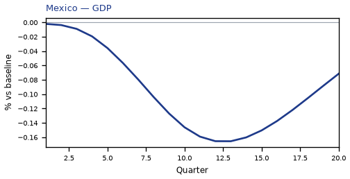
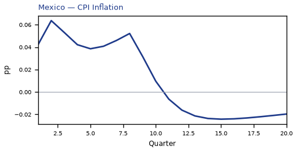
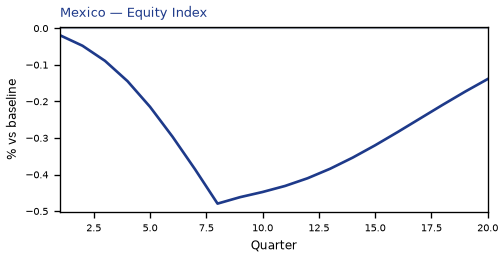
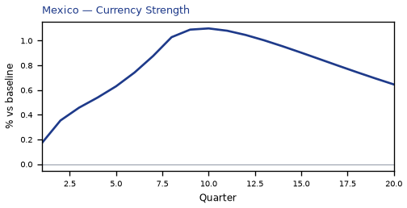
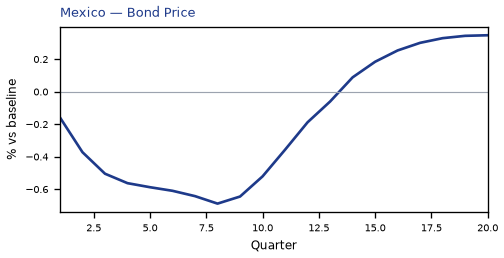
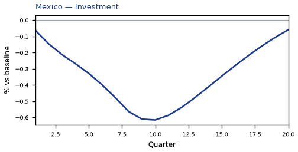
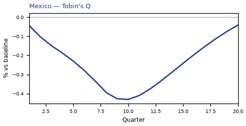
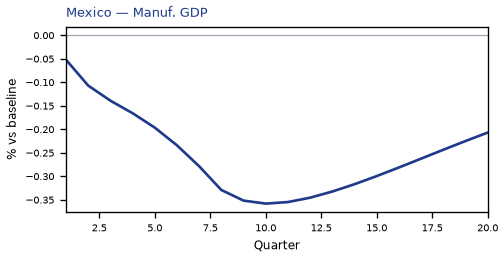
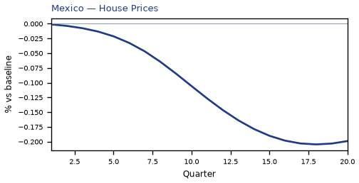
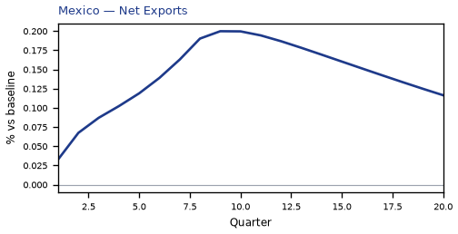
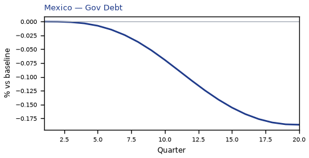

source=live · global_macro_v5 · contract v6 · Q1–Q20 JSON · not financial advice